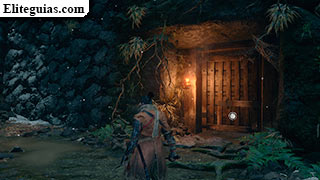

GUIA SEKIRO: SHADOWS DIE TWICE

Tras las escenas iniciales y cuando tengas el control del personaje, recoge la Carta ornamental que tienes justo delante y sigue las instrucciones
en pantalla para saltar y luego realizar un doble salto,
con lo cual entrarás oficialmente en la primera zona del juego, el Embalse de Ashina.
Un poco más adelante tienes que deslizarte por un bordillo pegado a la pared del acantilado.
Al estar en el borde por el otro lado, podrás echar un vistazo sin salir de tu cobertura si quieres.
El caso es que a partir de aquí ya habrá enemigos pero... todavía no tienes ningún arma, así que tendrás que usar el sigilo yendo agachado y moviéndote despacio por entre las hierbas. En el propio juego ya te explican como saber si el enemigo está apunto de detectarte o no, así que presta atención. En cualquier caso, el objetivo es meterte por debajo del suelo de la casa.
Sal por el otro lado y aparte de poder explorar otra conversación, tendrás que pasar por otro bordillo, pero esta vez colgándote de él en lugar de pasar de pie pegado a la pared. En la siguiente sección tendrás que saltar contra las paredes y estando en el aire pulsar el botón indicado para engancharte al bordillo. Y como podrás ver, las paredes por las que puedes trepar/engancharte, son fácilmente reconocibles. En cualquier caso, el objetivo es entrar en la casa por el agujero de la pared.
Allí dentro te espera Kuro, con el cual ya hablarás automáticamente y tras la escena recibirás la espada Kusabimaru además, en este momento también recibirás el logro/trofeo Hoja venerable. Pero todavía no te marches, habla una vez más con él y te dará la Calabaza curativa. Presta atención al tutorial sobre el uso de objetos rápidos y por ahora equípate con la calabaza. Y antes de nada, sube al piso de arriba para recoger una Gragea.
Una vez afuera, presta atención al tutorial sobre la postura y los golpes mortales, y ve acostumbrándote ya desde ahora a desviar los ataques enemigos, recuerda que en Sekiro: Shadows Die Twice no puedes atacar a lo loco.
Tras encargarte de esos dos primeros enemigos,avanza un poco más y verás el tutorial sobre desviar. Entonces acércate al portón que verás más adelante y en este lado hay 2 guardias, más otros dos al otro lado.
Sube las escaleras y prepárate para enfrentarte al mini-jefazo Líder Shigenori Yamauchi.
Como habrás podido comprobar, no estás ganando experiencia ni dinero ni nada...
no te preocupes, eso es tan solo en esta sección tutorial
, en breve comenzará el juego de verdad.
El portón está cerrado, así que ve por la derecha y recoge Puñado de cenizas x2. Entonces avanza por la rampa y salta desde el extremo de ésta hasta el bordillo, pulsando el correspondiente botón para engancharte en el aire.
Trepa por la pared y cuando estés colgado en el puente puedes espiar la conversación de los dos guardias. Debajo del propio puente hay una extraña criatura, con el que podrás acabar atacando todo seguido, pero no te confíes por que si te da golpeado te hará bastante daño.
Tras derrotarlo, cuélgate por el bordillo de la izquierda, deslízate hacia la pared opuesta y en cuanto puedas, déjate caer al suelo. Recoge una Gragea y continúa descendiendo hasta la puerta donde tienes que llamar al Descendiente Celestial con el silbato de junco. Después de la escena con Kuro, sigue hasta salir al exterior al final del pasaje, en donde tendrás que enfrentarte al jefazo Genichiro Ashina. Tras la pelea verás una serie de escenas y aparecerás en el Templo desolado.
Más adelante volverás a visitar este mismo lugar, para más información consulta la sección de Segunda visita al Embalse de Ashina.